Android 1.1 · Masaüstü 1.1.1 (Windows, Mac Apple Silicon, Linux) · Kasım 2026
Bideng, belgelerinizi sesli okuyan bir okuma uygulamasıdır. PDF, EPUB, Word ve diğer belgeleri açar; Türkçe, Arapça ve Farsça metinleri internet bağlantısı olmadan seslendirir. Kaldığınız yeri hatırlar, not almanızı sağlar ve göz yormayan okuma temaları sunar.
| Cihaz | Dosya | Not |
|---|---|---|
| Android telefon / tablet | Bideng-1.1-offline.apk | Önerilen. 5 sesin hepsi içinde (~300 MB), internet hiç gerekmez. |
| Android (yer az ise) | Bideng-1.1-online.apk | ~80 MB. Yalnızca Fahrettin (Türkçe) sesi gelir; diğer sesler uygulama içinden indirilir. |
| Windows 10 / 11 | …-windows-x64-setup.exe | Kurulum sihirbazı. Alternatif: .msi |
| Mac (M1, M2, M3, M4…) | …-macos-apple-silicon.dmg | Intel işlemcili Mac'ler desteklenmez. |
| Linux (Ubuntu, Mint, Debian) | …-linux-amd64.deb | Sisteme kurulur, menüye kendiliğinden eklenir. |
| Linux (tüm dağıtımlar) | …-linux-x86_64.AppImage | Kurulum gerektirmeyen tek dosya. Menüye ekleme: bölüm 2.5. |
Sesler: Fahrettin ve DFKI (Türkçe), Kareem (Arapça), Amir ve Gyro (Farsça).
Desteklenen belgeler: PDF (taranmış PDF'ler dahil), EPUB, DOCX, DOC, ODT, RTF, HTML, TXT.
Arayüz dilleri: Türkçe, Kurdî (Kurmancî), Arapça.
Gereksinimler: Android 6.0 ve üzeri, 64 bit (ARM64) işlemcili telefon/tablet (son yıllarda çıkan cihazların neredeyse hepsi) · Windows 10/11 (64 bit) · Apple Silicon işlemcili Mac · 64 bit Linux.
…-windows-x64-setup.exe dosyasını çift tıklayın.Kaldırmak için: Ayarlar → Uygulamalar → Bideng → Kaldır.
.dmg dosyasını çift tıklayın; açılan pencerede Bideng simgesini Applications (Uygulamalar) klasörüne sürükleyin.Yine açılmazsa (“hasarlı” uyarısı gibi) Terminal'i açıp bir kez şu komutu çalıştırın, sonra Bideng'i normal açın:
xattr -cr /Applications/Bideng.app
Dosyanın bulunduğu klasörde terminal açıp:
sudo apt install ./Bideng-1.1.1-linux-amd64.deb
Kurulumdan sonra Bideng uygulama menüsünde (Ofis bölümü) görünür. Eski bir sürüm kuruluysa önce kaldırmanız gerekmez; yeni paket onun yerine geçer. Kaldırmak için: sudo apt remove bideng
zenity, KDE'de kdialog). Bunlar kurulu değilse Bideng'in kendi, daha sade seçicisi açılır. Masaüstünüzün seçicisini kullanmak için: sudo apt install zenityAppImage, kurulum gerektirmeyen tek bir dosyadır: indirip çalıştırılabilir yapmanız yeterlidir. Ancak kendiliğinden uygulama menüsüne eklenmez. Menüde (ve dock / görev çubuğunda) simgesiyle görünmesi için aşağıdaki yollardan birini seçin.
chmod +x Bideng-1.1.1-linux-x86_64.AppImage ./Bideng-1.1.1-linux-x86_64.AppImage
Dosya yöneticisinden de yapabilirsiniz: dosyaya sağ tıklayın → Özellikler → İzinler → “Programın çalıştırılmasına izin ver”, sonra çift tıklayın.
libfuse2 gerekir.sudo apt install libfuse2sudo apt install libfuse2t64./Bideng-1.1.1-linux-x86_64.AppImage --appimage-extract-and-runGear Lever, AppImage'ları menüye ekleyen küçük bir programdır (Flathub'da, tüm dağıtımlarda çalışır).
flatpak install flathub it.mijorus.gearlever
.AppImage dosyasını pencerenin içine sürükleyip bırakın (veya dosyaya sağ tıklayıp Birlikte aç → Gear Lever).Bideng artık uygulama menüsünde simgesiyle görünür; dosya ~/AppImages klasörüne taşınır. Kaldırmak için Gear Lever'da Bideng'i seçip Kaldır deyin.
AppImage'ın bulunduğu klasörde terminal açıp aşağıdaki komutları sırayla çalıştırın. Bunlar dosyayı ~/Applications klasörüne taşır, simgeyi çıkarır ve menü kaydını oluşturur:
mkdir -p ~/Applications ~/.local/share/applications ~/.local/share/icons mv Bideng-*-linux-x86_64.AppImage ~/Applications/Bideng.AppImage chmod +x ~/Applications/Bideng.AppImage # simgeyi AppImage'ın içinden çıkar cd /tmp && ~/Applications/Bideng.AppImage --appimage-extract bideng.png cp /tmp/squashfs-root/bideng.png ~/.local/share/icons/bideng.png rm -rf /tmp/squashfs-root && cd ~ # menü kaydı cat > ~/.local/share/applications/bideng.desktop <<EOF [Desktop Entry] Type=Application Name=Bideng Comment=Çevrimdışı sesli belge okuyucu Exec=$HOME/Applications/Bideng.AppImage %F Icon=$HOME/.local/share/icons/bideng.png Categories=Office;Education; Terminal=false EOF update-desktop-database ~/.local/share/applications 2>/dev/null || true
Birkaç saniye içinde Bideng uygulama menüsünde görünür (görünmezse oturumu kapatıp açın). Simgeye sağ tıklayıp Sık kullanılanlara / Panele ekle diyerek dock'a sabitleyebilirsiniz.
Kaldırmak için:
rm ~/Applications/Bideng.AppImage ~/.local/share/applications/bideng.desktop ~/.local/share/icons/bideng.png
AppImageLauncher kuruluysa (bazı dağıtımlarda hazır gelir), AppImage dosyasına çift tıkladığınızda “Integrate and run / Entegre et ve çalıştır” sorusu çıkar; onaylamanız yeterlidir. Uygulama ~/Applications klasörüne taşınır ve menüye eklenir.
~/Applications/Bideng.AppImage olarak). Kütüphaneniz ve notlarınız ~/.bideng klasöründe saklandığı için kaybolmaz.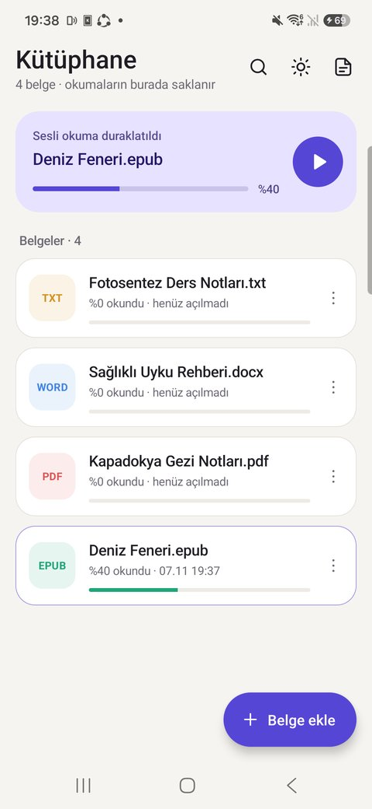 Kütüphane |
|
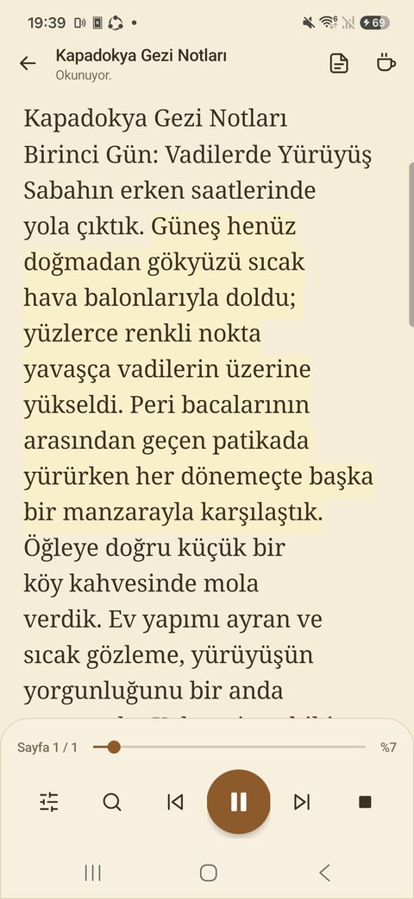 Okuyucu |
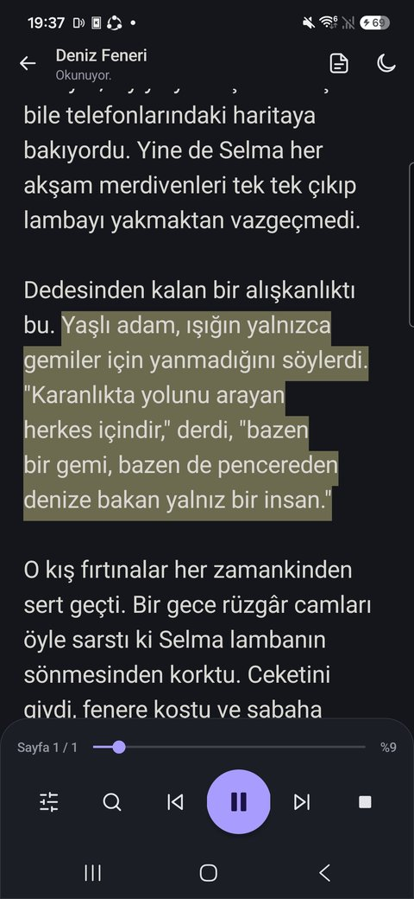 Okunuyor (cümle vurgulu) |
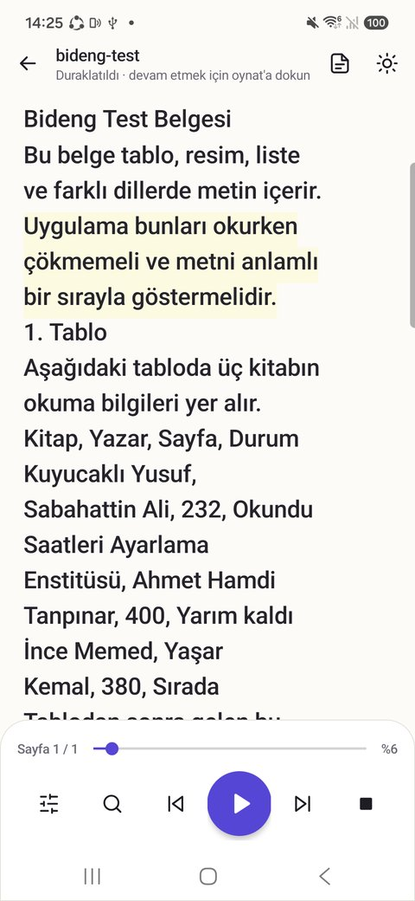 Duraklatıldı |
| Ne yapmak istiyorum? | Nasıl? |
|---|---|
| Okumayı başlat | Alttaki büyük ▶ düğmesi. Ekranın en üstündeki satırdan başlar. |
| Belli bir kelimeden başlat | Metinde o kelimeye dokunun. |
| Duraklat / devam et | Okurken düğme ⏸ olur. Duraklatınca okunan cümle vurgulu kalır; ▶ tam o cümleden devam eder. Uygulamayı kapatsanız bile kaldığı yeri hatırlar. Okurken metne çift dokunmak da duraklatır. |
| Başka bir sayfadan okut | Okurken ekranı istediğiniz yere kaydırın: ekran sizi geri çekmez ve düğme ▶ (buradan oku) olur; dokununca ekranda görünen yerden okumaya başlar. Duraklatılmışken uzak bir yere kaydırıp ▶'ye basmak da aynı şekilde görünen yerden başlatır. |
| Bir cümle geri / ileri | ⏮ / ⏭ düğmeleri. |
| Tamamen durdur | Sağdaki ■ düğmesi (okuma yokken bu düğme otomatik kaydırmayı başlatır). |
| Telefon kilitliyken kontrol | Bildirim panelindeki Bideng kartından Duraklat / Devam et. |
| Belli bir süre sonra dursun | Ayarlar → Uyku (15, 30, 60 dk veya kapalı). |
| Sayfaya git | Alttaki kaydırma çubuğunu sürükleyin; sol tarafta sayfa, sağda yüzde görünür. |
| Metinde ara | Büyüteç düğmesi; ˄ ˅ ile sonuçlar arasında gezinin. |
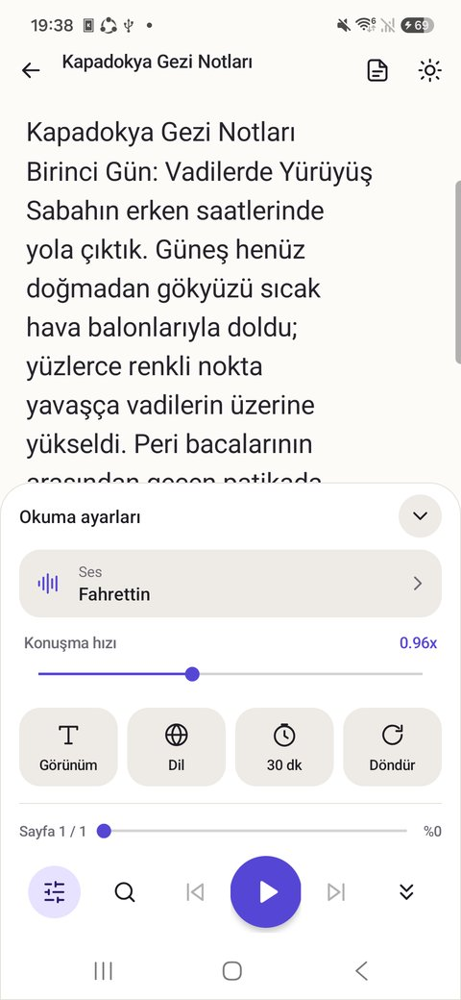 Okuma ayarları |
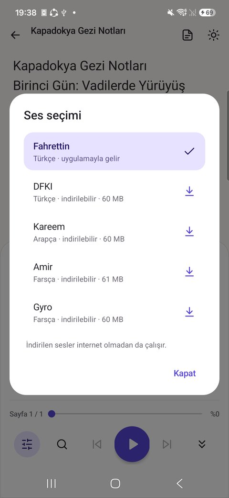 Ses seçimi |
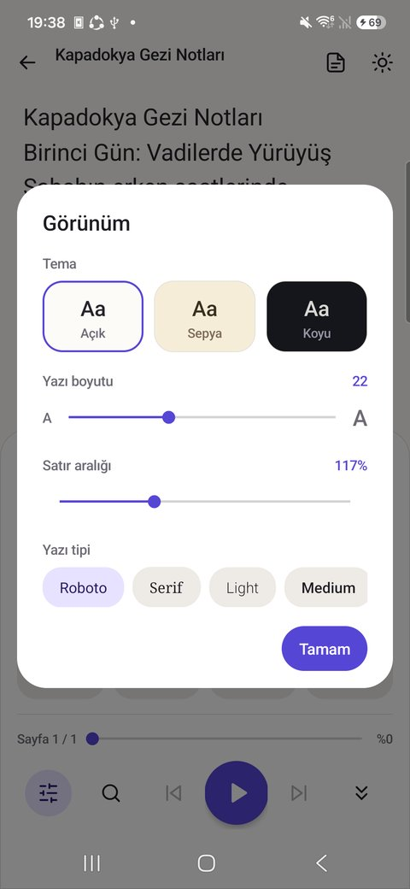 Görünüm |
Alttaki ayar (sürgü) simgesi paneli açar:
Geri tuşu (veya geri hareketi) sırasıyla: not seçimini iptal eder → otomatik kaydırmayı durdurur → arama ve ayar panelini kapatır → okuyucudan kütüphaneye döner → kütüphanede uygulamayı arka plana alır (kapatmaz).
Masaüstü uygulaması 1.1 sürümünden itibaren Android ile aynı tasarımdadır. Hangi sürümü kullandığınız kütüphane başlığının altında yazar (ör. v1.1.1).
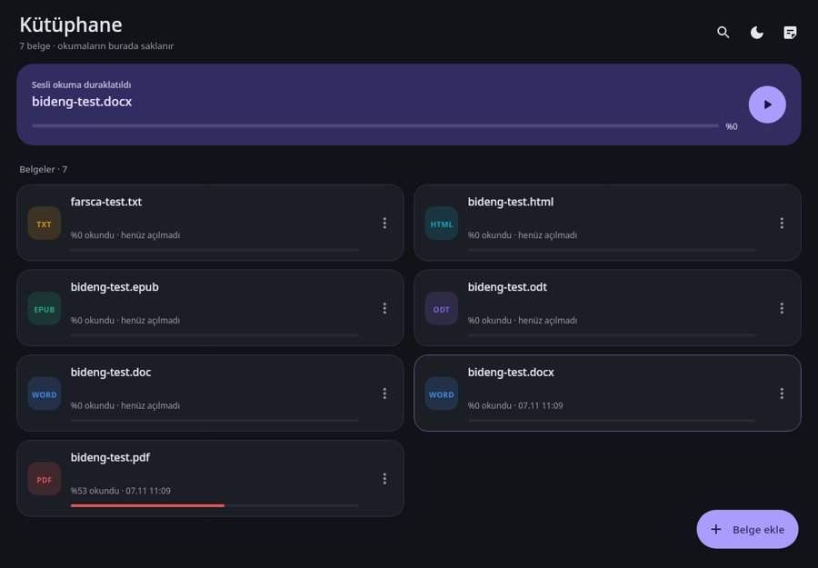 Kütüphane ve “Kaldığın yerden devam et” |
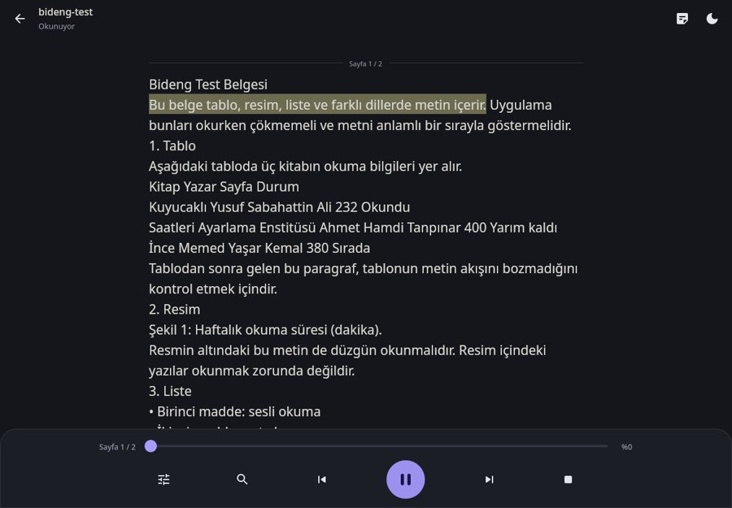 Okunuyor (cümle vurgulu) |
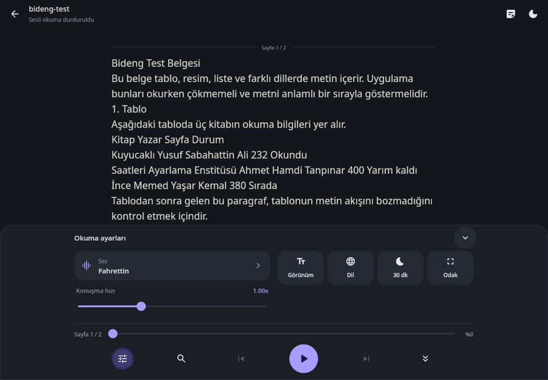 Okuma ayarları (ses, hız, görünüm, dil, uyku) |
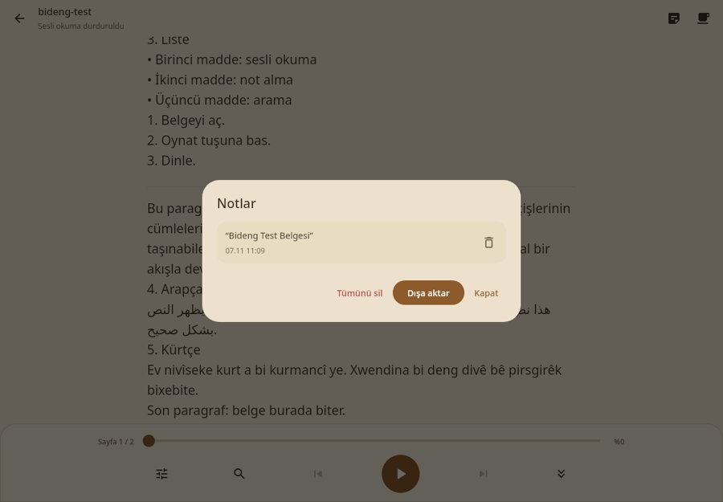 Notlar penceresi |
| Kısayol | İşlev |
|---|---|
| Boşluk | Oynat / duraklat / devam et |
| Ctrl+O | Belge ekle |
| Ctrl+F | Okuyucuda metinde ara; kütüphanede belge ara |
| + / − | Yazı boyutunu büyüt / küçült |
| Page Down / Page Up | Bir ekran aşağı / yukarı |
| F11 | Tam ekran |
| Esc | Açık olanı kapat (seçim, arama, ayarlar, notlar); yoksa kütüphaneye dön |
Masaüstünde kütüphane ve notlar kullanıcı klasörünüzdeki .bideng klasöründe saklanır (Windows: C:\Users\AdınızSoyadınız\.bideng, Mac/Linux: ~/.bideng). Bu klasörü yedeklemek kütüphanenizi yedekler.
| Sorun | Çözüm |
|---|---|
| Ses gelmiyor | Telefonun medya sesini açın (zil sesi değil). Sessiz/titreşim modu medya sesini etkilemeyebilir; ses tuşlarına okurken basın. |
| Arapça / Farsça metin Türkçe gibi okunuyor | Ayarlar → Ses'ten belgenin diline uygun sesi seçin (Kareem, Amir, Gyro). |
| Uygulama Android'e yüklenmiyor | Farklı imzalı eski bir Bideng kurulu olabilir: eskisini kaldırıp yeniden kurun. |
| Bildirimde kontrol görünmüyor | Android'in sorduğu bildirim iznine izin verin (Ayarlar → Uygulamalar → Bideng → Bildirimler). |
| Mac'te “açılamıyor / hasarlı” | Bölüm 2.3'teki xattr -cr komutu. |
| Windows'ta mavi “korudu” ekranı | Ek bilgi → Yine de çalıştır. |
| AppImage açılmıyor | libfuse2 kurun ya da --appimage-extract-and-run ile çalıştırın (bölüm 2.5). |
| AppImage menüde görünmüyor | Bölüm 2.5'teki Yol 1 veya Yol 2'yi uygulayın; gerekirse oturumu kapatıp açın. |
| Linux'ta yeni sürümü kurdum ama eski görünüm açılıyor | Kurulum tamamlanmamış olabilir. Terminalde dpkg -l bideng yazın; sürüm 1.1.1 değilse paketin bulunduğu klasörde sudo apt install ./Bideng-1.1.1-linux-amd64.deb komutunu tekrar çalıştırın. Kütüphanede başlığın altında v1.1.1 görünmelidir. |
| Linux'ta “Belge ekle” penceresi boş / gri açılıyor | 1.1.1 sürümünde düzeltildi; güncelleyin. Bideng'in kendi seçicisi yerine masaüstünüzünkini isterseniz sudo apt install zenity (bölüm 2.4). |
| Masaüstünde ▶'ye basınca ses gelmiyor | Bilgisayarın ses çıkışını (hoparlör/kulaklık) ve ses düzeyini kontrol edin; çıkış aygıtını değiştirdiyseniz Bideng'i kapatıp yeniden açın. |
| Android'de “uygulama telefonunuzla uyumlu değil” | Bideng 64 bit (ARM64) telefonlarda çalışır; çok eski 32 bit telefonlarda kurulamaz. |
| Belge açılmadı | Dosyanın bozuk ya da şifreli olmadığını kontrol edin; başka biçimde (ör. PDF yerine EPUB/DOCX) deneyin. |
Bideng reklam, hesap veya izleme içermez. Belgeleriniz, notlarınız ve okuma geçmişiniz yalnızca cihazınızda saklanır. Uygulama internete yalnızca online Android sürümünde, siz bir ses indirmeyi onayladığınızda bağlanır. Gizlilik politikasının tamamı: helgurt574-cpu.github.io/bideng-privacy